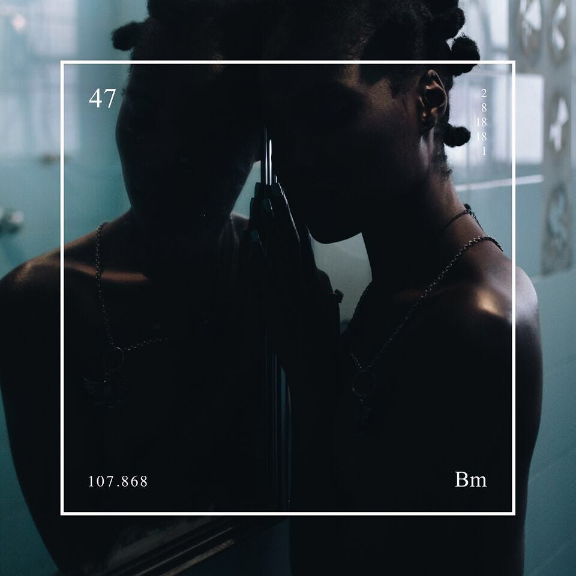

Os maiores sucessos da carreira do rapper baiano Baco Exu do Blues
20 Ligações |
 |
Carro-chefe do álbum Quantas Vezes Você Já Foi Amado?, a música 20 Ligações usa a voz do rapper de maneira firme para questionar um grande amor que ficou no passado e já não faz mais sentido. |
|
Samba In Paris (part. Gloria Groove) |
|
Com forte pegada R&B, Samba In Paris é uma parceria de Baco Exu do Blues e Gloria Groove com letra centrada na Cidade Luz e em promessas de amor, com leve aceno ao sucesso Ne me Quitte Pas, de Jacques Brel. |
|
Girassóis de Van Gogh |
 |
Um dos maiores sucessos da carreira de Baco Exu do Blues, Girassóis de Van Gogh fala sobre um amor tão avassalador quanto surreal, bem ao estilo da arte do pintor Vincent Van Gogh. |
|
Lágrimas (part. Gal Costa) |
|
A luta contra o racismo dá a tônica de Lágrimas, sucesso de Baco Exu do Blues com sample de Gal Costa, que canta sobre a solidão do homem preto e as agruras da violência racial. |
|
Bluesman |
 |
Faixa que dá nome ao bem-sucedido segundo álbum de Baco Exu do Blues, Bluesman apresenta o rapper com um flow acelerado, celebrando o ritmo musical do Blues e sua importância para a construção artística da identidade afro. |
|
Me Desculpa Jay Z (part. 1LUM3) |
 | Composta para representar a luta contra os transtornos de depressão e bipolaridade de Baco Exu do Blues, Me Desculpa Jay Z é considerada uma das melhores músicas da carreira do rapper, com participação da revelação da música eletrônica brasileira 1LUM3. |
|
Flamingos (part. Tuyo) |
 |
Parceria de Tuyo com Baco Exu do Blues, Flamingos tem forte influência do rap norte-americano e canta sobre amor, dependência e hesitação na realidade de um relacionamento tóxico e inconstante. |
|
Te Amo Disgraça |
Maior hit do primeiro álbum do rapper, Te Amo Disgraça navega entre a batida do funk e a melodia do R&B com toques de sensualidade, erotismo e violência para contar a história de um amor caótico, permeado por ideações suicidas e depressão. |
||
Autoestima |
|
Na faixa Autoestima é possível conhecer um pouco mais de quem é Baco Exu do Blues, que canta sobre suas inseguranças, a luta com a balança e a negação de sua sensibilidade ao som de um beat suave que varia entre lento e acelerado. |
|
Seu Partir (part. Muse Maya) |
|
Acompanhado pela voz doce de Muse Maya, em Seu Partir Baco Exu do Blues mostra seu talento no rap com um flow acelerado no qual se eleva ao status de “Kanye West da Bahia”. |